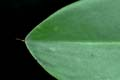

Common name in Tamil : Kandal
Common name in Telugu : Uppu ponna
Common name in Singhalese : Ela kadol

Diagnostic characters
Botany & morphology
Regeneration
Reproductive biology
Ecology
Distribution
Uses
Evergreen tree, with pyramidal crowns and many ascending branches; often buttressed with stilt and prop roots; bark brown. Flowers white or cream, two to eight flowered; hypocotyl 30 - 65 cm long and cylindrical.
Leaves simple, opposite, short petiolate, broadly elliptic or ovate - oblong, apex abruptly acute or blunt with mucronate tip, base cuneate, 10 - 18 x 4 - 10 cm, coriaceous.
Inflorescence axillary cymes with four to eight flowered.
Flowers white or cream, fragrant, small, bisexual, pedicellate; calyx 4-lobed, ovate; petals hairy, 9 – 10 mm long, lanceolate, fleshy, villose; stamens 6 – 8 mm long, 8 in number, 4 episepalous, 4 epipetalous, style free, emerging much above the disk.
Fruit brown, hypocotyl cylindrical, 30 – 65 cm long, with warty surface.
Stem base supported by numerous branched stilt roots.
Tree architecture and crown shape shows Attim’s model.
Germination by ‘Rhizophora-type’ (modified epigeal).
Pollination by wind and insects.
Common and often gregarious along the intertidal banks of creeks and channels in sheltered mangrove areas under estuarine influence.
East Africa to the Pacific Isles through south and south East Asia and N.E. Australia. In India, it is predominant in the Sunderbans, and other east coast mangrove forests and Andaman and Nicobar Islands and is less known along the west coast. In Sri Lanka it occurs on the southwestern part.
Wood forms a potential source of tannin, besides being used as fuel - wood and in medicines; tannin from bark used medicinally for haematuria, diarrhea, dysentery, leprosy.
Top of the page